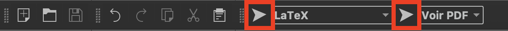
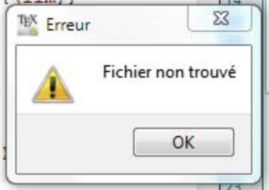

Étudiant en conception et développement d'applications
J'ai décidé en juin 2017, après 19 ans de restauration, de me reconvertir dans
l'informatique. Suite à un bilan de compétences confirmant ma décision, j'ai
commencé à coder. Ce site est le premier que je créé. Il m'a fallu du
temps pour le concevoir. Il n'est pas sous sa forme aboutie et évoluera au
fil du temps. La police que j'utilise pour ce site est l'Opendyslexic3.
C'est une police de caractères libre qui améliore la clareté et qui évite les
confusions de lecture chez les enfants dyslexiques. Je vous donnerais quelques
précisions sur ma reconversion professionnelle dans un article et vous
parlerais des technologies et sujets qui me tiennent à coeur. Vous pouvez me
contacter sur tous sujets en cliquant sur Contact un peu partout sur le site.
Je suis également présent sur les réseaux que vous trouverez à droite
de ce texte de présentation. Cliquez directement sur les icônes pour vous rendre
sur mes profils. À très vite!!!
Articles
Les différentes options de formulaire html
Je suis à la fin du cours
Openclassrooms qui m'a permis de créer ce site et je teste, dans cet article, les différentes options de formulaires "html".
Comme spécifié dans le cours, j'arrive à la limite du "html" car pour traiter les informations que les visiteurs du site renseigneront, il faut utiliser un autre langage comme PHP.
Vendredi 09 août 2019
Informations sur ma reconversion professionnelle
J'ai effectué mon bilan de compétences chez
Dynam IRH avec l'excellent
Frédéric
BERNIER.
Je suis des cours sur le site
Openclassrooms mais également sur le campus
IMIE, le tout sur Nantes.
Je suis en contrat de professionnalisation chez
Gest'innov depuis octobre 2018.
10 juillet 2019
Fichier non trouvé à la compilation sur TeXmaker
J'ai récemment dû fournir un compte rendu de projet et pour cela, j'ai remis le nez dans TeXmaker qui fournit des pdf de grandes qualités.
Sauf qu'il y avait presque un an que je n'avais pas pris l'outil en main et j'ai un peu ramé à compiler mon fichier pour créer mon pdf.
Dans ces cas, Google est ton ami mais on y trouve aussi de tout.
J'ai finalement réussi à trouver une solution, mais çà m'a tellement pris de temps que je me suis dit "pourquoi ne pas faire un article".
Comme vous vous en doutez, je suis sur MacOS Mojave, jusq'au mois de septembre, avant de passer sur Catalina.
Lorsque je sélectionnais dans un premier temps la flèche d'exécution à gauche de "LaTeX" et dans un second temps la flèche pour visionner le pdf à gauche de "Voir PDF", comme suit:

J'avais le message d'erreur suivant:

Après de nombreuses recherches, j'ai enfin découvert qu'il fallait faire un F6 avant de cliquer sur la flèche à gauche de "Voir PDF".